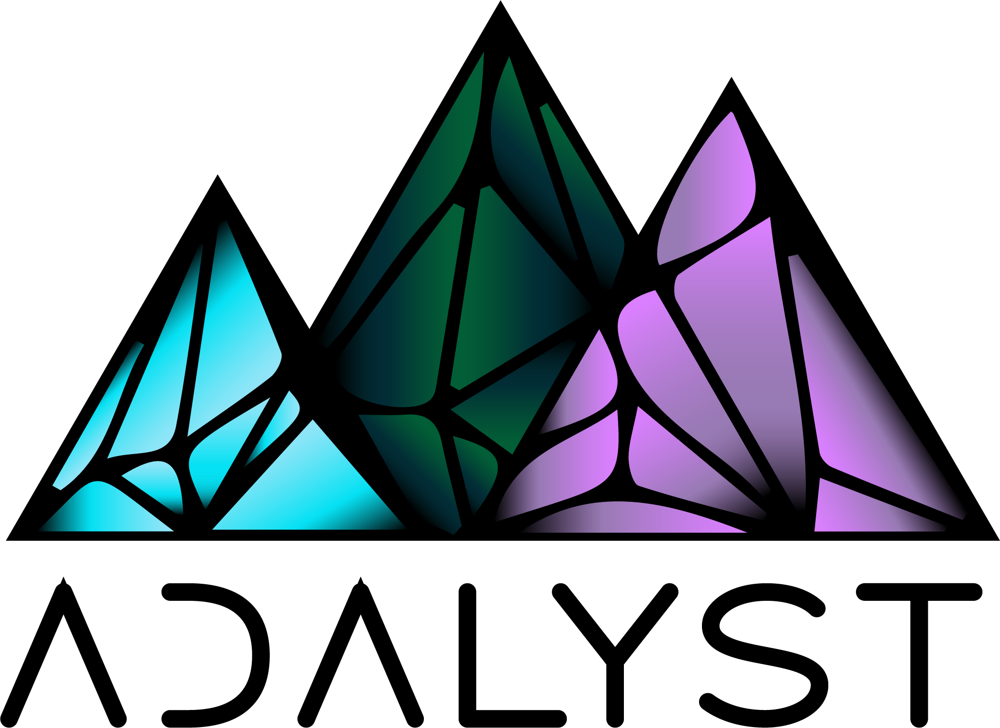

<nav class="navbar navbar-expand-lg navbar-light bg-light py-3">
  <a class="navbar-brand" href="#"></a>

  <button class="navbar-toggler" type="button" (click)="isMenuCollapsed = !isMenuCollapsed" data-toggle="collapse" data-target="#navbarSupportedContent" aria-controls="navbarSupportedContent" aria-expanded="false" aria-label="Toggle navigation">
    <span class="navbar-toggler-icon"></span>
  </button>

  <div class="collapse navbar-collapse" [ngbCollapse]="isMenuCollapsed" id="navbarSupportedContent">
    <ul class="navbar-nav mr-auto">
      <li class="nav-item active">
        <a class="nav-link" href="#">Home <span class="sr-only">(current)</span></a>
      </li>
      <li class="nav-item">
        <a class="nav-link" href="#">Explore</a>
      </li>
      <li class="nav-item">
        <a class="nav-link" href="#">Creators</a>
      </li>
      <li class="nav-item">
        <a class="nav-link" href="#">About</a>
      </li>
    </ul>
    <form class="form-inline my-2 my-lg-0 search-form">
      <input class="form-control mr-sm-2" type="search" placeholder="Search" aria-label="Search">
    </form>
  </div>

  <ul class="nav navbar-nav navbar-right pl-2">
    <li><a href="#">Create <fa-icon class="pl-1" [icon]="faPlusCircle"></fa-icon></a></li>
  </ul>
</nav>
